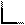
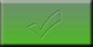
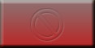
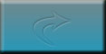
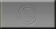
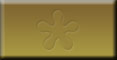

Menu
Buttons |
The Menu Buttons at the top left of the screen
access common game functions.
 |
Quit the tournament - don't forget to save before you quit during practice. |
|
Save the tournament. After you have saved a tournament
in practice, if the Auto Save option is ON, the
game will automatically be saved at the end of each hand. Note:
The host in an online tournament is the only one that saves and
loads. Online guests may re-join as long as they still have the
Game URL used for that game. |
|
Brings up the Info dialog pop up window. The I key also brings up this dialog. The Arrow Keys can be used to cycle through the tabs.
- Hand History - Detailed hand and betting history for every hand dealt.
Click Newer to work back to the current hand.
Click Older to display the previous group of 9 hands played.
Click Show All Computer Cards to flip the computer cards over. (practice only)
Click Show Reason as training tool to understand why actions were made. (practice only)
- Leader Board - Shows the tournament player standings as well as players that busted out. It also displays how you compare to the other players in the tournament.
In an online game, a designation to the right of each players
name will indicate if they are an (ai) computer
player, (host) host of the game, (demo)
demo player, or be blank for a human online player.
- Table List - Displays all the players by table and seat number.
A Show Player Type checkbox allows the user
of a practice game to see the ai type next to the players name.
(practice only)
- Tournament Settings - View the settings for the current tournament such as levels, blinds and payouts.
- Online Settings - Displays the current LAN
Game URL and Internet Game URL. The Copy button
can be used to copy the URL to your clipboard in order to give
someone the Game URL.
The Player Action Timeout can be adjusted on the fly by the host in this tab.
The default is set by the host before the game starts in the Edit Tournament screen. This is the amount of time in seconds a player has to act in an online tournament before their think bank timer is used. This timer resets each time the action reaches the player. (host online only)
The Player Think Bank can be adjusted on the fly by the host in this tab. The default is set by the host before the game starts in the Edit Tournament screen. This is the total amount of extra time a player may use when considering what action to take over the course of a hand. After the time specified by Player Action Timeout has expired, then the time in the Think Bank is automatically used. The think Bank is reset at the start of each hand. (host online only)
The Boot
Rules can be adjusted on the fly by the host in this tab. See Boot Rules in the Online tab section on the Edit Tournament screen.
 |
Export Table to Microsoft Excel. Right
click (CTRL-click on Mac) any of the tables such as the Levels,
Prizes or Opponents to bring up the Table Menu pop up. The
Export Table menu item is used to export the table in a comma
delimited file format (.csv) that can be read by most popular
spreadsheet software. |
|
 |
Brings up the Options screen, where you can specify over 50 game options and over 35 AI settings. |
 |
Brings up this help window. |
|
 |
|
| DD Dashboard |
The DD Dashboard is a configurable display which can
be personalized with the information you wish to see. By clicking the
dashboard header or the icon to the left of each dash item name, you
may  maximize or
maximize or  minimize the display for each dashboard item. A maximized dash item
will display the complete information, whereas the minimized mode will
display a shorthand version. By clicking the
to the right of the dash item, you remove it from the list. Click the
Edit button to add/remove or change the position of
dash items.
minimize the display for each dashboard item. A maximized dash item
will display the complete information, whereas the minimized mode will
display a shorthand version. By clicking the
to the right of the dash item, you remove it from the list. Click the
Edit button to add/remove or change the position of
dash items.
| Edit |
Click Edit for the Dashboard Editor pop-up screen. Here you may add dash items with the , or remove dash items with the . You may also change the order of the dashboard items by clicking the arrow next to each dash item to move it up or down the list. |
| Advisor |
Displays recommended advise on how to play your hand. See Advisor.
Click the Details button to bring up the Advisor
Information pop-up menu. There are two tabs, Summary, and Strategy.
The Summary tab gives the rationale of the advice with the Situation
and Decision Factors. The Strategy tab allows you to alter the
current advisor and view the Recommendation Matrix of hands.
Click the Do It button to act upon the advice of the advisor.
(Dash item always available in Practice, and Online when the host checks the Enable Dashboard Items checkbox in the online category of Edit Tournament.)
|
| Calculator Tool |
Click the Open
Calc Tool button to run in depth hand analysis and calculate
showdown outcomes. See Calculator Tool.
(Dash item always available in Practice, and Online when the host checks the Enable Dashboard Items checkbox in the online category of Edit Tournament.)
|
| Hand Strength |
After the flop, your hand strength is shown. This is a calculation of how often your hole cards win against all the other possible hands.
(Dash item always available in Practice, and Online when the host checks the Enable Dashboard Items checkbox in the online category of Edit Tournament.) |
| Host |
Host dash item has a Pause Game button in case an unscheduled break is needed. This button will pause all tables in the tournament and display the message Director: The host has paused the tournament in everyone's chat windows. The clock will pause and stop all action after the current player is done with their action.
(Dash item available for the game Host in Online only)
|
| Host Connection Status |
In online games, your connection
status to the host computer is displayed here. The Green
LED indicates you are connected to the host. The Red
LED indicates you are not connected to the host. A Yellow
LED flashing every 5 seconds indicates you your game is actively
trying to re-connect to the host.
If the Show Details box is checked, a pop up window with an error message will appear.
(Dash item available for a guest in Join Online only)
|
| Improve Hand |
Displays in percentage,
the chance of your hand will improve to a better one when the
turn and/or river cards come. It is often the case that your hand
will improve to three of a kind, a straight, a flush, etc. If
there is a chance of improvement, that chance is displayed as
a percentage. For example, if it shows that you have a 27% chance
of making a straight, then that means 27% of the time, the remaining
board cards to come will complete your straight.
(Dash item always available in Practice, and Online when the host checks the Enable Dashboard Items checkbox in the online category of Edit Tournament.) |
| My Hand |
Displays your hand and Card Rank. Your hand is always the best five cards, between your two hole cards and the five board cards.
|
| My Table |
Displays the table you
are sitting at, your seat, and hand number (how many hands have
been dealt). From tournament to tournament, your seat will change,
but your cards will always be in the bottom center of the screen.
In an online tournament, your opponents computer will display
you in the the proper seat number from their perspective. During
a tournament with more then 10 people, multiple tables are used
and as players are eliminated, any player including yourself may
be moved to another table to even up the number of players at
each table.
When observing a tournament, either by busting our or joining as an observer, you may switch the table you are observing by clicking the Change Table button displayed under My Table
|
| Observers |
Displays all the observers currently watching the current table. Observers watching other tables are not shown. Note: When players are eliminated from the tournament, they become observers. Any user may right click on an observer to mute their chat or ban them from any future games they host.
(Dash item available in Online only)
|
| Online |
| Sit-out |
Click the Sit-out checkbox to automatically
fold your cards during the tournament when away from the computer.
This prevents your Think Bank time from being used up and
avoids any unnecessary delays. If you exit the game, the Sit
out checkbox will automatically be checked. If you
lose connection, you think bank time will be used to give
you time to rejoin the game and not miss your current hand.
See Player Think Bank on the Edit
Tournament screen for more information. Hint:
You may click your cards and choose the sit-out menu item
as a shortcut. |
| Muck Losing Hands |
Check the Muck Losing Hands checkbox to automatically muck
your losing hand. If the Muck Losing Hands is unchecked, a
pop-up screen will appear for 5 seconds at the end of a hand
asking you if you wish to show or muck your losing hand. If
you do not answer within 5 seconds, it will default to muck.
If you choose show, your cards will be flipped over and also
displayed in the chat window.
Note: When you are called, you must show your hand and the
muck hands checkboxes are overridden. Normally you do not
want to show any of your hands to your opponents and give
any more information to the other players then you need
to. However, on occasion, you may feel the need to show
your opponents your cards. An example would be showing your
2-7 off suit cards to show your
opponents you don't just bet with good cards and you have
the ability to bluff. Or just the opposite, showing your
pocket aces to demonstrate you don't always bluff to keep
your opponents guessing. |
Muck
Winning Hands |
Check the Muck Winning Hands checkbox to automatically muck
your winning hand. If the Show Winning Hands is unchecked,
a pop-up screen will appear for 5 seconds at the end of a
hand asking you if you wish to show or muck your winning hand.
If you do not answer within 5 seconds, it will default to
muck. If you choose show, your cards will be flipped over
and also displayed in the chat window. |
(Dash item available in Online only)
|
| Player Info |
When the mouse pointer is placed over any player at the table, the Player Info displays that player's rank in the tournament, how many total hands in the game they have been disconnected, how many total hands in the game they have been sitting-out, and how many rebuys they have left if applicable. Note: The host may boot a player from the game for being disconnected or sitting-out a set number of hands in the online tab of Edit Tournament.
(Dash item available in Online only)
|
| Player Style |
When the mouse pointer is placed over any player at the table, the Player Style dash header displays that player's name and displays a graph of their tightness and aggressiveness when maximized.
All players can be categorized in two ways. How few or how many hands they play determines how tight/loose they are. How little or how much a player bets determines how passive/aggressive they are.
The graph is divided into four quadrants. The X axis ranges from Tight on the left to Loose on the right. The Y axis ranges from Passive on the top to Aggressive on the bottom. The closer the plotted point is to the edge of the graph, the more that player reflects that attribute.
Example: A good solid poker player would be tight-aggressive and the point on the graph will be in the bottom left quadrant. Whereas poor poker player typically know as fish would be loose-passive and the point on the graph will be in the upper right quadrant. Several hands of data must be collected on a player before an average is shown. Otherwise "Don't Know Yet" will be displayed.
(Dash item available in Practice and Online if the Enable Dash Items option is on) |
| Poker Clock |
Displays the current level, current time left in the level, and current small and big blinds. Note: The clock in practice mode simulates real tournament play and will decrease based on the average time of a round of cards. This can be adjusted by the Hands Per Hour setting on the Options page. The clock in online games will reflect actual time.
|
| Pot Odds |
If there is a bet that
you may call, the pot odds are displayed both as odds (X to 1)
and a percentage. One concept in poker is that it is sometimes
appropriate to stay in the hand if the total odds of improvement
(as a percentage) are greater than the pot odds (as a percentage).
Thus if your odds of improvement total 30% and the pot odds
show as 20%, it might make sense to call. Over the long term,
you are expected to win more money than you lose. See the Chance
of Improvement dash item for your odds of improving the hand.
See Pot Odds in the Glossary for additional
information.
(Dash item always available in Practice, and Online when the host checks the Enable Dashboard Items checkbox in the online category of Edit Tournament.) |
|
Rank |
Displays your tournament
rank (based on the chip count), the number of players left in
the tournament, and how many tables are currently being used.
Note: All chip leaders are displayed by clicking the Info
button. |
| Up Next |
Displays the small and
big blinds to be used in used the next level when the poker clock reaches zero. |
| When It's My Turn... |
These are advance action
checkboxes to choose what to do with your hand before it is your
turn to act. You may wish to use these because many times, based
on your current hand, you know well in advance of your
turn to act what your action will be. This way you do not need
to wait until it is precisely your turn to act when waiting for
other players to make a decision. This will also speed up general
online game play. Although this dash item was designed for online
play, it can be used in practice if you wish, but typically the
computer play is so fast it is not needed. The checkboxes are
reset every time you act.
| Advisor Auto Pilot |
If this checkbox is checked, the current advisor will automatically play for you. Note: This action is the equivalent of the Do It button under the Advisor dashboard item automatically being clicked. Note2: The Auto Pilot takes over once you click a final action if it is your turn to act. You may uncheck this checkbox whenever you wish. Hint: You can change the advisor by clicking your cards and choose Set Advisor Type. We recommend the advisor "Solid", although you can create your own from the Oppenents tab in AI Options. (This is available in Practice and only available online when the host checks the Enable Dash Items option in Edit Tournament. |
| Check or Fold |
If this checkbox is checked, you will fold
your hand when it is your turn to act unless you can stay
in the hand by checking. |
| Call |
If this checkbox is checked, you will call
the last bet or raise that was made at the time you checked
the box. If someone raises after you checked the box, the
box will reset, display the new call amount and allow you
to re-check it. The call box will be disabled if you only
need to check. |
| Go All-in! |
If this checkbox is checked, you will go All-In
when it is your turn to act. (No-limit) |
| Bet |
If this checkbox is checked, you will Bet the
limit for that round of betting when it is your turn to act.
Note: On pre-flop and flop the bet is equal to the big blind,
and the turn and river the bet is equal to double the big
blind (Bet is displayed for Limit only, Bet Pot is displayed
for Pot Limit) |
| Raise |
If this checkbox is checked, you will Raise
the limit for that round of betting when it is your turn to
act. (Raise is displayed for Limit only, Raise Pot is displayed
for Pot Limit). |
|
| Debug |
This is used to help Donohoe Digital troubleshoot a potential problem. This should only be used if instructed by a Donohoe Digital support person. For you techies, by clicking the Thread Dump button in the Debug dash item, you are dumping all the threads currently running to the log file that can be seen from the Support button on the Main Menu.
|
|

Status Display
& Chat Window
|
This area is used for displaying dealer messages, and player chat messages if playing online.
Players have the choice in the general tab of the options page to seperate dealer chat from player chat in a side by side format, tabbed format, or combined.
Note: More detailed hand information can be found by clicking the Info button.
Observers will appear in the chat window in purple with a [obs] next to their name to indicate they are an observer.
Demo users will appear in the chat window with a [demo]
next to their name to indicate they are a demo user.
| Send |
Use the text area to type your message, then hit Enter or click the Send button to send your message to everyone. Your message will be displayed in the chat window. (Online only) |
| Send All Send Host |
The host of an online game can type a chat message and click the Send All button to send their message to all the players at every table. As a guest in an online tournament, you may send a private message to the host by typing a chat message, then click the Send Host button. The host will then have the opportunity to send a private message back by typing a chat message and clicking the Reply button which appears in the chat window to the right of the private message. (Online only) |
| Clear |
Click Clear to erase all the text in your chat window. You may wish to do this to view the information easier when scrolling. This will not clear the text on anyone else's chat window. |
| Lobby |
Click Lobby to start the chat lobby where you can talk with other players currently running DD Poker. |
|

Action Buttons |
The Action Buttons control your action in the game.
|
The camera icon in the upper right allows you to
take a photo of the screen. When you press it, it takes a picture
at the moment you press the button and then display a file chooser
to allow you to pick the name and where to save it. This is useful
for sharing amazing hands with friends or on the DD Poker Forums. |
|
|
The Resize Knob allows you to change the size of
the DD Dashboard, chat area and poker table. This is a click and
drag knob. Using the mouse, click and hold the left or right mouse
button when the mouse cursor is over the Resize Knob. A 
symbol will appear to show you where the intersection between the
three areas will be once you release the mouse button. Double click
the Resize Knob to restore the default size of the screen. |
| Countdown Timer
Bar |
If the Display Countdown Timer Bar
option is ON, a thin color bar is displayed just above the action
buttons when it is your turn to act displaying a countdown of your
available player action time and think bank time. |
|
|
Keyboard focus ON/OFF indicator. When the focus is
on the keyboard the indicator is yellow, when the focus is elsewhere
on the poker table, the indicator is white. With the focus is on
the keyboard, you may use keyboard Shortcuts
for the game actions like fold, call, or raise.
Use the Tab key to change focus between items on the poker table,
or use the mouse to toggle keyboard focus by clicking on the indicator. |
| Deal |
Use the Deal button or the (D key)
to start each hand. |
| Fold |
Use the Fold button or the (F key)
to fold your hand. This button is disabled if you have another option
besides folding (for example, when a check will suffice). This behavior
can be changed via the Always Allow Fold option. |
Check/
Call |
This button displays Check (C key)
when there is no bet for you to call. It displays Call if there
is a bet in front of you that you can call. The amount you are calling
is listed above your cards. The (C Key) is also
used to continue during an all in showdown when the Pause
When All-In option is ON, or during a chip color up when
the Pause during Color Up option is ON. |
Bet/
Raise |
This button displays Bet (B key)
when there is not a bet in the round yet. If there is already a
bet, this button displays Raise. In either case, the amount you
bet or raise is set in the amount text field. |
Amount
Spinner |
The Amount Spinner lets you type in the amount of
a bet or raise. You have several options to change the bet/raise,
the easiest is moving the slider with your mouse. You can also use
the +/- buttons or Arrow Keys to increase/decrease
the bet by the amount of the smallest chip denomination (represented
by the chip icon above the spinner). If you use the CTRL-Arrow
Keys, the amount is increased/decreased by 10 times the
smallest chip denomination. Pressing the Enter
key perform the bet/raise with the current amount in the spinner
field.
The mouse wheel also alters the Amount Spinner by increments
of the smallest chip denomination. By holding the CTRL
Key, the mouse wheel alters the Amount Spinner by 10X increments
of the smallest chip denomination.
Note: When entering a raise, the number specified is in addition
to the amount needed to call (in other words, it is the amount
of the raise, not the amount of the total bet). The amount text
field will enforce the minimum bet or minimum raise. If you have
more chips than everyone else still in the hand, it will enforce
a maximum amount (basically the amount required to put any opponent
still in the hand all-in). |
| All-in! |
The All-in!
button or the (A key) is equivalent to betting
or raising all your chips. (No Limit only) |
| Bet Pot! |
The Bet Pot! button
or the (P key) bets the value of the current pot,
plus the call amount. (Pot Limit only) |
| Rebuy |
The Rebuy button
(E key) appears when you are in a rebuy tournament
and the rebuy period is still active. You can only rebuy if you
haven't exceeded the maximum rebuys defined for the tournament
and your chip count is at the permitted level (as measured at
the start of the hand). If you rebuy during a hand, the chips
will be added to your stack at the end of the hand. |
 |
The smallest chip
at the table. This is the lowest chip denomination being used
at the table. The smallest chip increases as the tournament progresses
and chips are colored-up in the Chip Race.
|
|
|
Playing
Area
|
The Playing Area displays the cards,
player information, actions and pot.
| Player |
There are ten seats at the poker table. Each player's
name and chip count is displayed in their area. Your seat number
may vary, but from your perspective, you are always located on the
bottom center of the table, holding slightly larger cards then the
other players. In practice mode, with the Cheat Pop-up Menu
option ON, by clicking on your opponents cards, you are
able to change either hole card, the player type, chip count, or
move the button to that position. Clicking on your cards allows
you to change your advisor type also. |
Player Pop-up/ Cheat Pop-up Menu
 |
Player menus pop-up when you click on the poker table cards, players or observers. Online the pop up menus include feature such as sitting out and muting players. With the Cheat Pop-up Menu option ON in practice mode, by clicking on your opponents cards, you are able to change either hole card, the player type, player name, chip count, move the button to that position, or remove the player. By clicking on your cards, you are able to change either hole card, your advisor type, chip count, or move the button to your position. You may also change any of the board cards by clicking on them.
|
Change Card allows you to change the card the mouse pointer is over to any card in the deck. If another player has the card you choose, the other players card will turn to another available card in the deck. Note: The option to change a card only appears in the pop up menu only when you can see the card face up, therefore the boards cards, an all-in showdown or the options Peak at Opponent's Cards or Computer Cards Face Up turned ON. |
|
Set Player Type allows you to change the AI computer player to any player type for the remainder of the game. See Player Types under opponents in Options. |
|
Change Player Name allows you to change that player's name for the current tournament. |
|
Change Chip Count allows you to alter that players chip dollar amount to any desired value. |
 |
Move Button Here allows you to move the position of the button to that players position. Note: You can also choose the Don't Move Button option in the Options screen to keep the button in the same position. |
|
Remove Player allows you to completely remove a computer AI from the tournament. Note: The remove player option only appears between hands when clicking on the computer opponents. |
|
Set Advisor Type changes your advisor player type displayed in the DD Dashboard Advisor item. This icon only appears when clicking on your cards at the bottom of the poker table. |
|
Sit-out / Resume Playing is a short cut to the Sit-Out Online DD Dashboard item. You may click your cards and click this button to toggle from sitting out or resuming play. (online only) |
|
Deal gives you another alternative to clicking the Deal button when Auto Deal is Off by right clicking the center of the poker table at the end of a hand. |


|
Mute / Un-mute allows you to add or remove players to the muted player list. Chat from these players will no longer be displayed in the current game or any future online games or lobbies. This is useful to turn text chat off for any players whose chat you find annoying or offensive. Muted players stay muted in all future chat until deleted from the list. Hint: You can manage your muted players and banned players lists from the online tab on the Options screen. |

 |
Ban / Un-ban allows the host or any guest to add a player or observer to their ban list. This only affects future games hosted by you and does not affect the current game. Exception: If the host bans an observer, that observer will also be immediately booted from the game. |
|
Hole
Cards |
The computer players' cards are dealt face down.
Your cards are dealt face up. You can use the Hole Cards
Face Down option to deal them face down. This is good practice
for real poker tournaments because it helps you practice memorizing
your cards. In practice mode, with the Cheat Pop-up Menu option ON, by clicking on your hole cards, you are able to change either hole card, your advisor type, chip count, or move the button to your position. |
Board
Cards |
The community or board cards are displayed in the
middle of the poker table. With the Cheat Pop-up Menu option ON, you can alter the board cards in practice mode by clicking on any board card. |
| Pot |
As bets are made, chips are displayed in the pot
in the left center of the board. The total pot amount is displayed just
below the chips. |
Side Pots
|
If there is a side pot, a button will appear
listing the number of side pots. If you click on this button, a
dialog is displayed showing the amount in each side pot and which
players are involved in it. The winner of the side pots will also be displayed in the chat window or can be seen in the hand history of the Info button. |
Player
Actions |
The last action a player took is displayed next to his or her
hole cards. The icons below are displayed to give a visual reference
to each player's action. In addition, the total amount they have
bet in the round is listed, as well as the current amount of a call.
When dollar amounts are too large to display, the numbers are shortened and displayed using the
thousands abbreviation, "K". Example: $10K is the same as $10,000).
|
Check |
|
Small Blind |
|
Big Blind (first round) or initial bet (subsequent rounds) |
 |
Call |
|
Raise |
|
Re-raise |
|
3rd+ raise |
|
All-in |
|
Fold |
|
This player's turn to act |
|

Dealer
Button |
The dealer button marks which
player is acting as the dealer. In practice mode, with the Cheat Pop-up Menu ON option, you may move the position of the button by clicking on any players cards for the player pop-up and choosing Move Button Here. You may also choose to keep the button in the same position with the Don't Move Button option if you wish to practice from the same position every hand. |
|  |
The green placard with the check mark is used to indicate the player who won the pot (or part of the pot) and the amount won. This placard is also displayed if a player won part of a side pot.
The green placard is also displayed when the Pause When
All-in option is on. It indicates the player currently
the odds on favorite to win the hand. They could have a lesser hand
than other players, but the odds favor them to improve. |
|  |
The red placard with the "no" symbol is used to indicate that a player lost the pot. |
|  |
The light blue placard with the arrow is used to
indicate that the player lost the pot, but an over bet was returned
to the player. An over bet occurs when a player goes all-in and
is called by someone with fewer chips. This extra amount is the
"over bet" and is returned after the showdown. If the
player who over bet wins the hand, then the over bet amount is included
in the amount won and displayed using the green placard. |
|  |
The gray placard with the "no" symbol is used to indicate that the player folded his or her hand after calling, betting or raising. This is only displayed if the Show Folded Hands option is turned on. |
|  |
The brown placard with the "all-in"
symbol is used when the Pause When All-in option
is turned on. It displays the current hand the player has and
the odds that it will end up being the winner at the end of the
hand.
Note: the odds displayed before the flop are
an approximation based on all possible flops (the first 3 cards).
We do this because for the typical heads-up all-in hand, determining
the precise odds requires calculating all possible five card boards
(a total of 1,712,304 combinations!). This takes 9-18 seconds
to calculate (depending on your CPU) which is too much of a delay.
Thus pre-flop odds are displayed with a tilde (~), indicating
"approximate". Odds displayed after the flop are the
precise odds that hand will end up winning.
Note: If you wish to determine the true pre-flop
odds, use the Calculator Tool's Showdown calculator. |
|
Online games will display a dark blue placard to show when you are sitting-out, or when other players have been disconnected or are sitting-out. (online only) |
|
| |
|
|